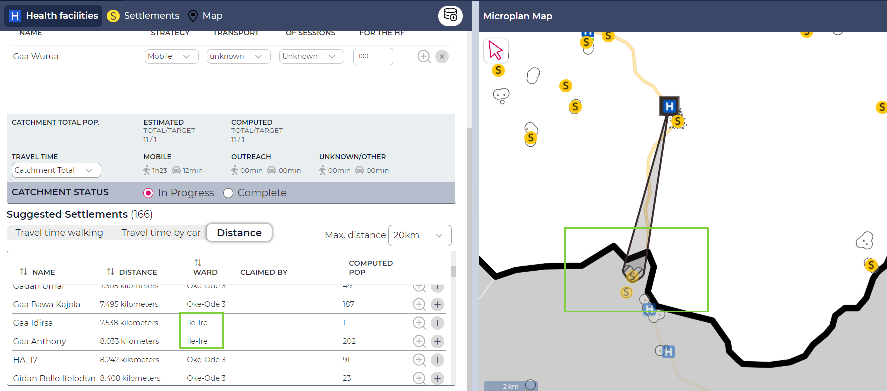
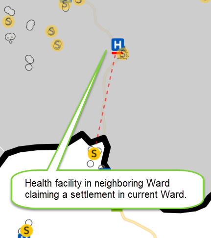
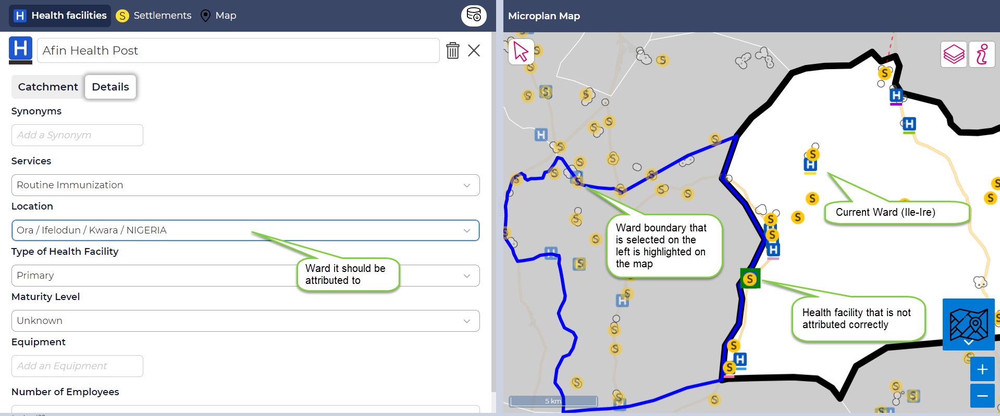
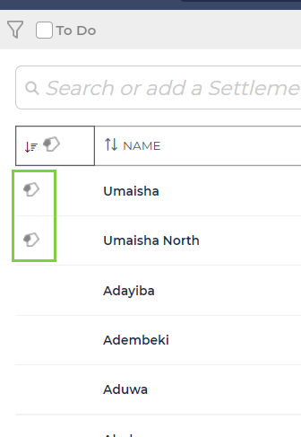
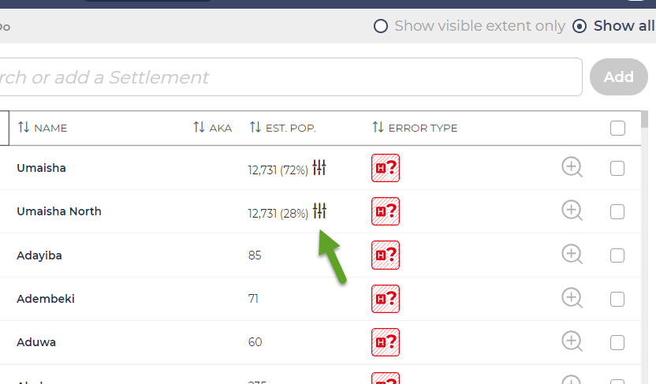
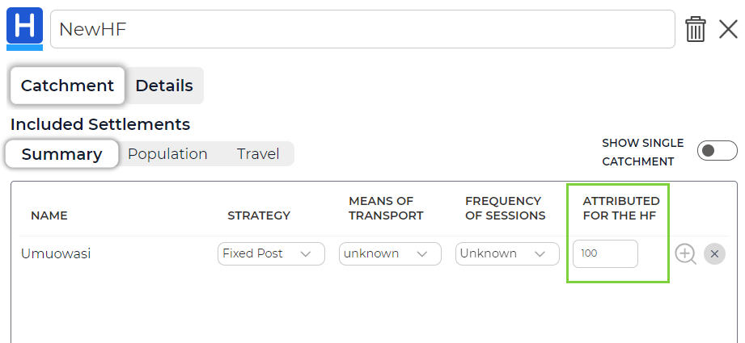
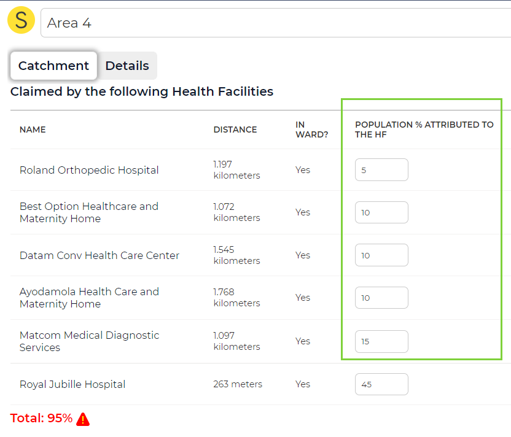
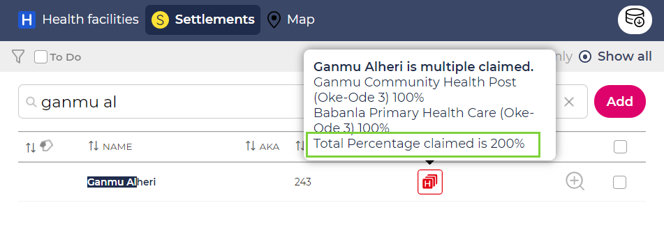
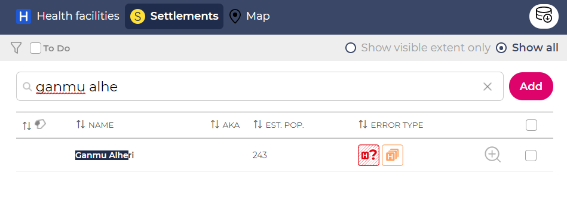
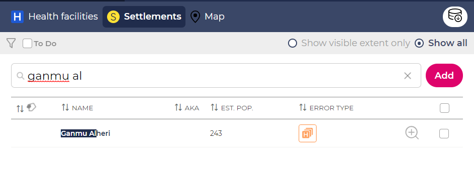

1. Guide to the GMT
1.1. Neighboring Wards
1.1.1. Catchments in neighboring Wards
It is possible for a health facility to claim settlements in neighboring Wards. Visually, this is no different from usual catchments, except that the catchment now spans a Ward boundary. When you add a settlement from another Ward to a health facility, you will also see in the suggested settlement list that it is within another Ward.

When doing the microplan now for the neighboring Ward, the settlement will be visually linked with the health facility it was claimed by with a red dashed line:

1.1.2. Assigning a health facility or a settlement to another Ward
It is possible to attribute a health facility or settlement to another Ward. You can do this in the settlement or health facility detail page.

However, doing this will not have any further impact in the application. The Ward boundaries will remain as such. They will have to be changed elsewhere.
1.2. Settlement Parts
Two names that reside within the same settlement polygon have this icon next to them in the settlement list:

1.3. Balancing Population
In a case where you have multiple primary names for one polygon, you will need to assign each name a certain amount of the population residing within the polygon. When you add the name to the polygon, you will be asked to balance the population either by providing absolute numbers or else providing percentages.
You can always change this later by clicking those icons:

1.4. Multiple Claimed Settlements
Whenever a settlement is claimed by several health facilities, it will appear as “Multiple Claimed”. It will frequently be the case in urban areas, where there are many health facilities within 2km of an area. In those cases, it is unclear how the population will be choosing which health facility they would go to. In such a case, a health facility will have to indicate what percentage of a settlement it is claiming (since if, for instance, two health facilities claim 100% of one settlement, it would be claimed for 200% - that would be incorrect). Per default, it is always assumed that a health facility claims a settlement fully (i.e. 100%).
The percentages can be adjusted in the health facility catchment tab:

The percentage can also be adjusted from the settlements tab:

If the population percentage of a multiple claimed settlement corresponds to 100%, this settlement will still have an orange warning icon to indicate it’s multiple claimed. If the population percentage of a multiple claimed settlement does not correspond to 100%, this settlement will have an error icon. If the percentage is below 100%, it will appear as multiple claimed as well as unclaimed. If the percentage is above 100%, the “Multiple claimed” icon will be red.
If claimed above 100%:

If claimed below 100%:

If claimed exactly at 100%:

1.5. Error Icons
The following error icons exist:
Machine Name This settlement has an automatically generated name. You should give it a real name.
{kind=link}
No location This settlement / health facility has no location.
{kind=link}
Unclaimed This settlement has not been claimed by a health facility or it has not been claimed fully (i.e. 100%).
{kind=link}
Multiple claimed Orange as a warning if a settlement is claimed by several health facilities and it is not overclaimed. The icon is red if the settlement is claimed above 100%.
{kind=link}
No settlement This health facility has not been assigned any settlement.
{kind=link}
Population not 100% This icon indicates that a settlement has not been assigned the full extent of the polygon. You will have to assign it the full 100% or balance the population accordingly, if there are several primary names in that polygon.
{kind=link}